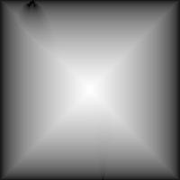

Distance Transform
Calculate a distance transform
Metric
Metric to use for the distance calculation
name: metric
type: enum
Threshold low
name: threshold-lo
type: double
default: 0.00
minimum: 0.00
maximum: 1.00
ui-minimum: 0.00
ui-maximum: 1.00
ui-gamma: 1.00
ui-step-small: 0.00
ui-step-big: 0.10
ui-digits: 3
Threshold high
name: threshold-hi
type: double
default: 1.00
minimum: 0.00
maximum: 1.00
ui-minimum: 0.00
ui-maximum: 1.00
ui-gamma: 1.00
ui-step-small: 0.00
ui-step-big: 0.10
ui-digits: 3
Grayscale Averaging
Number of computations for grayscale averaging
name: averaging
type: int
default: 0
minimum: 0
maximum: 1000
ui-minimum: 0
ui-maximum: 256
ui-gamma: 1.50
ui-step-small: 1
ui-step-big: 10
Normalize
Normalize output to range 0.0 to 1.0.
name: normalize
type: boolean
default: True
pads: input output
parent-class: GeglOperationFilter
categories: map
source: operations/common/distance-transform.c
 This page is part of the online GEGL Documentation, GEGL is a data flow based image processing library/framework, made to fuel GIMPs high-bit depth non-destructive editing future.
This page is part of the online GEGL Documentation, GEGL is a data flow based image processing library/framework, made to fuel GIMPs high-bit depth non-destructive editing future.